The Cat Breeds Gallery
From the fluffiest Maine Coon to the mysterious Lykoi, PurrPets has compiled the ultimate list of feline companions. Find the breed that matches your personality!
Breed Gallery
| Breed Name | Visual Example | Primary Trait |
|---|---|---|
| Siamese | 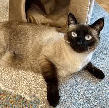 |
Vocal and very social. |
| British Shorthair | 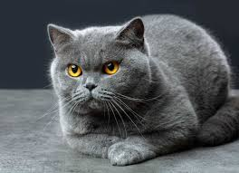 |
Calm, easygoing, and "round." |
| Ragdoll | 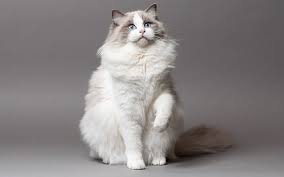 |
Goes limp with joy when held! |
| Sphynx | 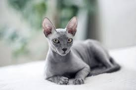 |
Hairless, warm, and energetic. |
| Scottish Fold | 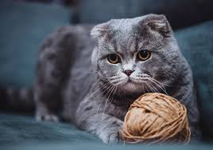 |
Famous for their unique folded ears. |
| Russian Blue | 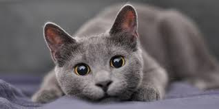 |
Silvery coat and quiet nature. |
| Birman | 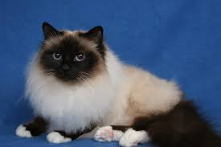 |
The "Sacred Cat of Burma" with white "gloves" on its paws. |
| Munchkin | 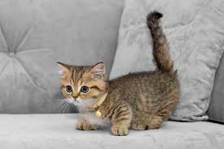 |
Naturally short legs, often called the "Corgi of Cats." |
| Japanese Bobtail | 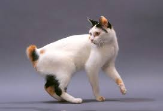 |
A naturally short "pom-pom" tail and a lucky history. |
| Norwegian Forest |  |
A massive, water-resistant double coat for cold weather. |
| Lykoi |  |
The "Werewolf Cat" with a patchy, salt-and-pepper coat. |
| Toyger | 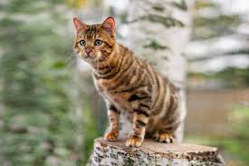 |
Bred specifically to look like a "Toy Tiger" with bold stripes. |
| Ocicat | 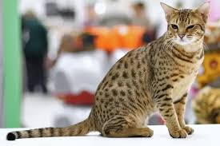 |
Looks like a wild Ocelot but has 100% domestic DNA. |
| Chausie | 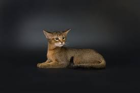 |
A "Jungle Cat" hybrid known for being very tall and athletic. |
| LaPerm | 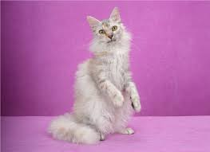 |
Famous for their tight, curly "perm" fur and sweet personality. |
Important Note on Rarity
Breeds like the Lykoi (the "Werewolf Cat") or the Khao Manee (the "Diamond Eye") are very rare and often have specific genetic care requirements. Always research a breeder's health certifications before adopting!